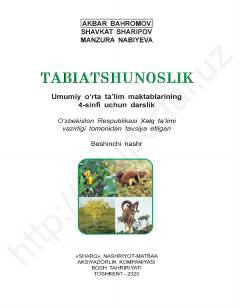

T44-sinf o'quvchilari uchun tabiatshunoslik fanidan rasmiy darslik.
Mazkur darslik umumiy o'rta ta'lim maktablarining 4-sinfi uchun mo'ljallangan bo'lib, o'quvchilarga o'lkamiz tabiati, o'simlik va hayvonot olami haqida ma'lumot beradi. Kitobda O'zbekistonning geografik xususiyatlari, fasllar almashinuvi va tabiatni asrab-avaylashga oid bilimlar qiziqarli tarzda yoritilgan.